Multimedia的lab2报告，主要是FreeSWITCH的使用。（再次为删掉了自己lab1的报告而暴哭！）
我在本地用的是typora编辑器写markdown，转移到hexo的时候在图片上的显示有点问题，尤其是双栏显示问题很大，有点懒的搞这个。
Ubuntu16.04 源码编译安装FreeSWITCH 视频通话实现 实验目的 实现FreeSWITCH支持WebRTC视频通话。
实验原理 配置FreeSWITCH，需要启用一些视频会议需要的mod
FreeSWITCH FreeSWITCH 是一个免费的开源应用服务器，用于实时通信，WebRTC，电信，视频和互联网协议语音（VoIP）。多平台，它运行在Linux，Windows，macOS和FreeBSD上。它用于构建PBX系统，IVR服务，具有聊天和屏幕共享的视频会议，批发最低成本路由，会话边界控制器（SBC）和嵌入式通讯设备。它完全支持加密，ZRTP，DTLS，SIPS。它可以充当PSTN，SIP，WebRTC和许多其他通信协议之间的网关。它的核心库libFreeSWITCH可以嵌入到其他项目中。它是根据免费软件许可证Mozilla Public License（MPL）许可的。
FreeSWITCH可以处理来自IP网络（VoIP）和PSTN（公共交换电话网络 - 常规固定电话）的语音，视频和文本通信。 FreeSWITCH支持所有流行的VoIP协议以及与PRI的接口。 有关支持的协议的完整列表，请参阅“端点”页面。 FreeSWITCH使用的一些常见功能包括:
PBX（办公电话系统） 5类软交换（电话运营商） 应用程序服务器，如语音邮件，会议，IVR 软件电话 webRTC WebRTC （Web实时通信）是一个免费的开源项目，通过简单的应用程序编程接口（API）为Web浏览器和移动应用程序提供实时通信（RTC ）。它允许音频和视频通信在网页内部工作，允许直接的点对点通信，无需安装插件或下载本机应用程序。[3]支持苹果，谷歌，微软，Mozilla的，和歌剧，WebRTC正在通过万维网联盟（W3C）和互联网工程任务组（IETF）进行标准化。
其使命是“ 为浏览器，移动平台和物联网设备开发丰富，高质量的RTP应用程序，并允许它们通过一组通用协议进行通信 ”。的参考实现被释放自由软件下一个条款BSD许可证。OpenWebRTC提供了另一种基于多媒体框架GStreamer的免费实现。JavaScript发明家布兰登·艾奇（Brendan Eich）称其为“在一场开放且无阻碍的网络长期战争中的新阵线”。
实验过程 配置文件修改 修改基础配置：
1 2 3 4 5 6 7 8 9 10 <X-PRE-PROCESS cmd="set" data="default_password=666666" /> <X-PRE-PROCESS cmd="set" data="global_codec_prefs=OPUS,G722,PCMU,PCMA,H264,VP8,H263" /> <X-PRE-PROCESS cmd="set" data="outbound_codec_prefs=OPUS,G722,PCMU,PCMA,H264,VP8,H263" /> <X-PRE-PROCESS cmd="set" data="media_mix_inbound_outbound_codecs=true" /> <X-PRE-PROCESS cmd="set" data="internal_ssl_enable=true" />
修改sip通话设置：
1 2 3 4 5 6 7 8 9 <param name="inbound-late-negotiation" value="false" /> <param name="inbound-zrtp-passthru" value="false" /> <param name="apply-candidate-acl" value="localnet.auto" /> <param name="rtp-timeout-sec" value="30000" /> <param name="rtp-hold-timeout-sec" value="180000" />
修改默认加载模块：
1 2 3 4 5 6 <load module="mod_av" /> <load module="mod_shout" /> <load module="mod_h26x" /> <load module="mod_ilbc" /> <load module="mod_rtmp" />
配置修改验证 1 2 3 4 5 6 7 8 9 10 11 12 13 14 15 freeswitch@xps15> sofia status Name Type Data State ============================================================================================ external-ipv6 profile sip:mod_sofia@[2403:d400:1001:2:cc58:83ee:da6e:b743]:5080 RUNNING (0) external-ipv6 profile sip:mod_sofia@[2403:d400:1001:2:cc58:83ee:da6e:b743]:5081 RUNNING (0) (TLS) 10.162.48.191 alias internal ALIASED external profile sip:mod_sofia@10.162.48.191:5080 RUNNING (0) external profile sip:mod_sofia@10.162.48.191:5081 RUNNING (0) (TLS) external::example.com gateway sip:joeuser@example.com NOREG internal-ipv6 profile sip:mod_sofia@[2403:d400:1001:2:cc58:83ee:da6e:b743]:5060 RUNNING (0) internal-ipv6 profile sip:mod_sofia@[2403:d400:1001:2:cc58:83ee:da6e:b743]:5061 RUNNING (0) (TLS) internal profile sip:mod_sofia@10.162.48.191:5060 RUNNING (0) internal profile sip:mod_sofia@10.162.48.191:5061 RUNNING (0) (TLS) ============================================================================================ 4 profiles 1 alias
实验结果 两人视频通话 以下是两人视频通话的实验结果，VP8和H264编码均测试可行。
关于H265， 由于FreeSWITCH不支持H265编解码，因此可以通过开启透传模式进行实验，此时FreeSWITCH不进行编解码，只负责设备间协调。
注意：H265只支持在两个linphone之间拨打，webRTC不支持。
图 视频通话效果
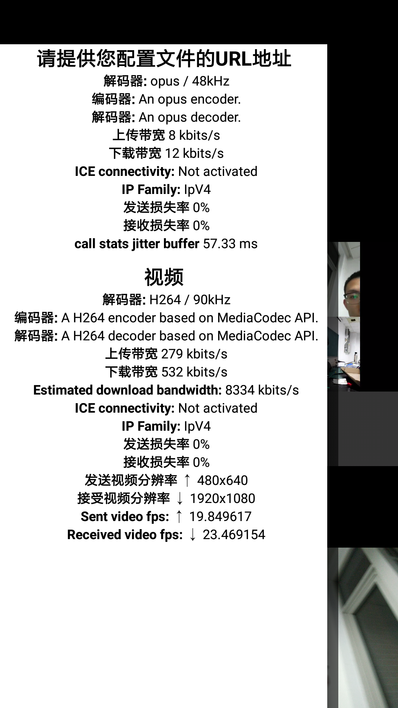 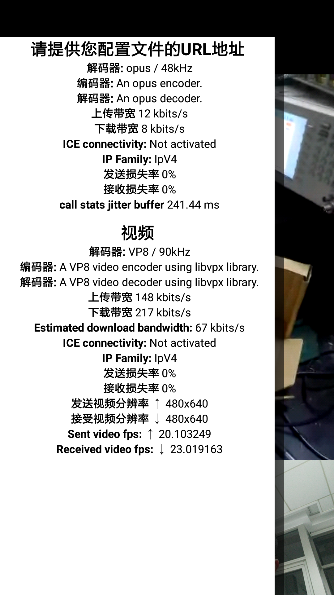 webRTC 实验需要使用Firefox ESR (Firefox Extended Support Release)
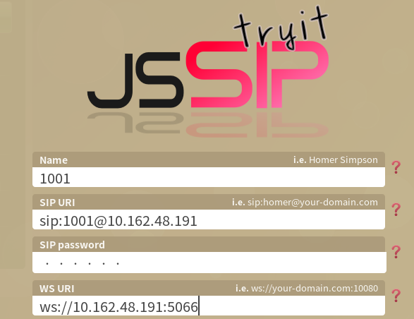图 webRTC端登录
成功登录之后可以正常进行视频通话、会议通话等，和手机端linphone对等。
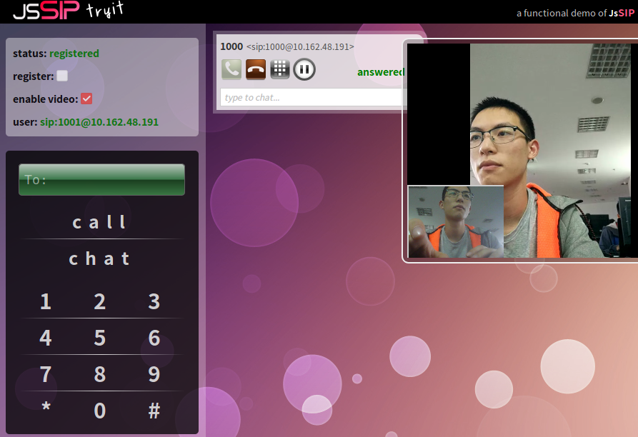图 webRTC通话效果
此时，可以在FreeSWITCH查看到设备注册情况：
手机端 agent：LinphoneAndroid/3.3.1 (belle-sip/1.6.3) 电脑端 agent：JsSIP 0.7.17 1 2 3 4 5 6 7 8 9 10 11 12 13 14 15 16 17 18 19 20 21 22 23 24 25 26 27 28 29 30 31 32 33 freeswitch@xps15> sofia status profile internal reg Registrations: =========================================================================================== Call-ID: 4TEf3h8-8Q User: 1000@10.162.48.191 Contact: "" <sip:1000@10.162.158.184:37914;transport=udp> Agent: LinphoneAndroid/3.3.1 (belle-sip/1.6.3) Status: Registered(UDP)(unknown) EXP(2019-05-13 15:40:51) EXPSECS(3128) Ping-Status: Reachable Ping-Time: 0.00 Host: xps15 IP: 10.162.158.184 Port: 37914 Auth-User: 1000 Auth-Realm: 10.162.48.191 MWI-Account: 1000@10.162.48.191 Call-ID: e7pjfnevajs4jt4tdc58dk User: 1001@10.162.48.191 Contact: "" <sip:hmf3085e@75k2o7pe5ngo.invalid;transport=ws;fs_nat=yes;fs_path=sip%3Ahmf3085e%4010.162.48.191%3A56540%3Btransport%3Dws> Agent: JsSIP 0.7.17 Status: Registered(WS-NAT)(unknown) EXP(2019-05-13 14:58:45) EXPSECS(602) Ping-Status: Reachable Ping-Time: 0.00 Host: xps15 IP: 10.162.48.191 Port: 56540 Auth-User: 1001 Auth-Realm: 10.162.48.191 MWI-Account: 1001@10.162.48.191 Total items returned: 2 ===========================================================================================
视频会议 拨号3000可以进入视频会议：
通过conference + commend可以手动对视频会议配置进行修改。
1 2 3 4 freeswitch@xps15> conference list Conference 3000-10.162.48.191 (2 members rate: 8000 flags: running|answered|enforce_min|dynamic|exit_sound|enter_sound|video_floor_only|video_rfc4579|livearray_sync|transcode_video|video_muxing|minimize_video_encoding|json_status) 2;sofia/internal/1001@10.162.48.191;724374d7-55b5-4998-ba53-2fc160ff9650;1001;1001;hear|speak|video;0;0;0;100 1;sofia/internal/1000@10.162.48.191;32797f63-e4c4-489f-b2fc-aa2ac91fdff9;1000;1000;hear|speak|talking|video|floor|vid-floor;0;0;0;100
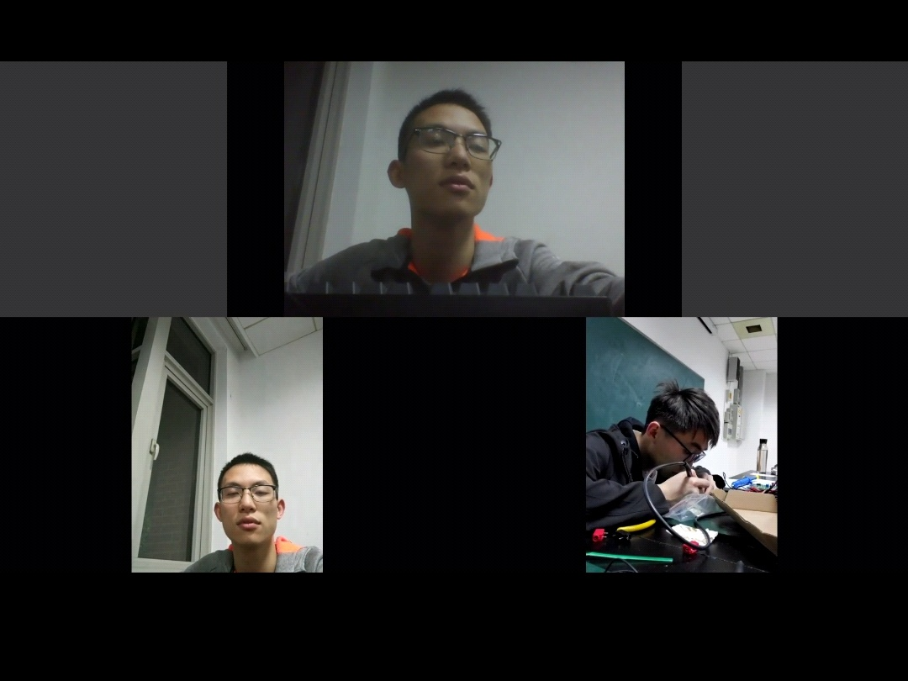图 视频会议效果
视频会议布局修改 调整视频会议布局需要修改以下配置文件：
1 2 3 4 5 6 7 8 9 <param name="conference-flags" value="video-floor-only|rfc-4579|livearray-sync|minimize-video-encoding" /> <param name="video-mode" value="mux" /> <param name="video-layout-name" value="2x2" /> <param name="video-canvas-size" value="1920x1080" /> <param name="video-canvas-bgcolor" value="#333333" /> <param name="video-layout-bgcolor" value="#000000" /> <param name="video-fps" value="25" />
在conference_layouts.conf.xml中，FreeSWITCH预置了一些布局配置：
1 2 3 4 5 6 7 8 9 10 11 12 13 14 15 16 17 18 19 20 21 22 23 24 25 26 27 28 29 30 31 32 33 <groups > <group name ="grid" > <layout > 1x1</layout > <layout > 2x1</layout > <layout > 1x1+2x1</layout > <layout > 2x2</layout > <layout > 3x3</layout > <layout > 4x4</layout > <layout > 5x5</layout > <layout > 6x6</layout > <layout > 8x8</layout > </group > <group name ="grid-zoom" > <layout > 1x1</layout > <layout > 2x1-zoom</layout > <layout > 3x1-zoom</layout > <layout > 2x2</layout > <layout > 5-grid-zoom</layout > <layout > 3x2-zoom</layout > <layout > 7-grid-zoom</layout > <layout > 4x2-zoom</layout > <layout > 3x3</layout > </group > <group name ="1up_top_left_plus" > <layout > 1up_top_left+5</layout > <layout > 1up_top_left+7</layout > <layout > 1up_top_left+9</layout > </group > <group name ="3up_plus" > <layout > 3up+4</layout > <layout > 3up+9</layout > </group > </groups >
布局调整测试 在FreeSWITCH中使用命令：conference 3000-10.162.48.191 vid-layout 1up_top_left+5，可以实时修改布局配置，其中，可修改的布局在前文已经展示，以下展示了一些布局效果。
图 布局1x1+2x1
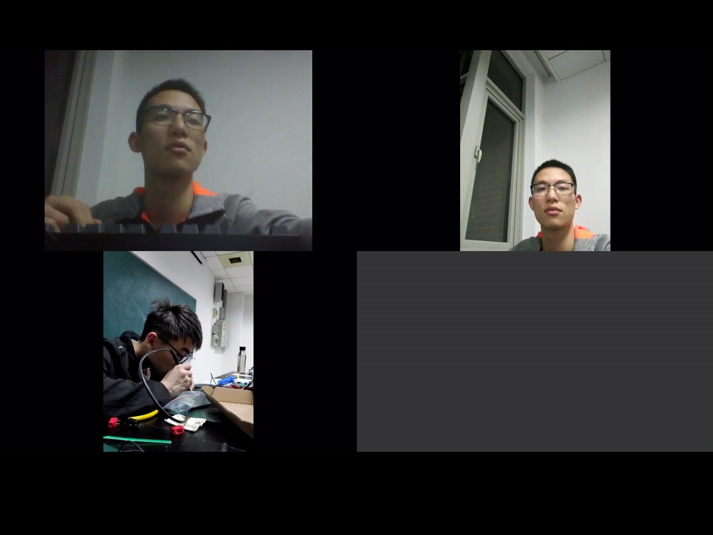图 布局2x2
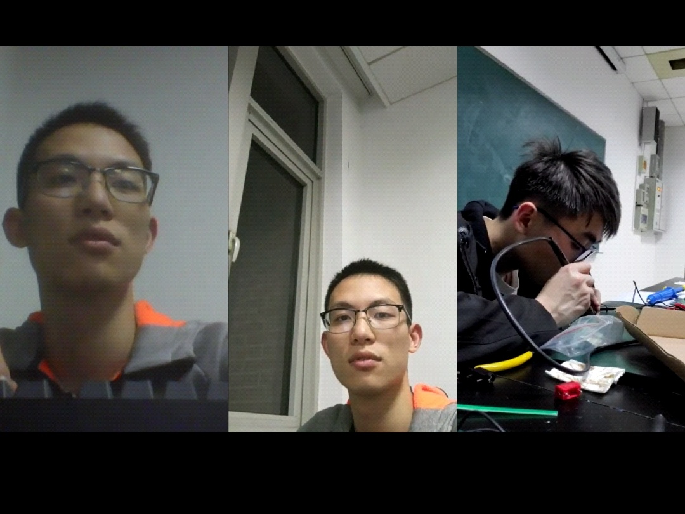图 布局3x1-zoom
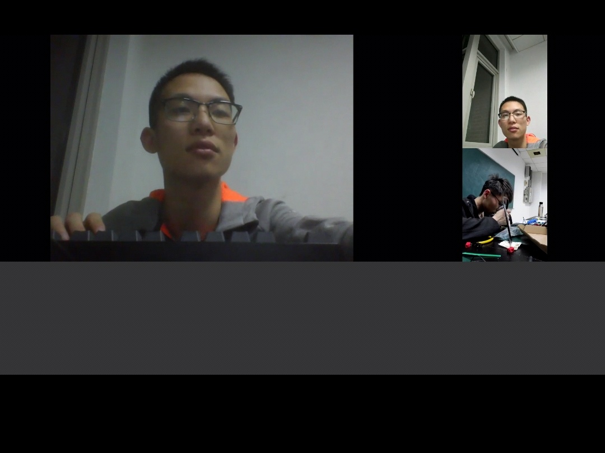图 布局1up_top_left_plus
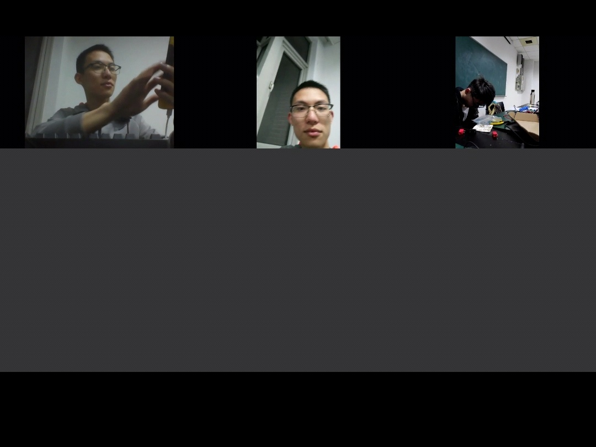图 布局3up+4
延迟测试 以下是延迟测试，可以看到通过视频通话实时传回的图像中，时钟显示在同一秒，说明延迟在1s以内。
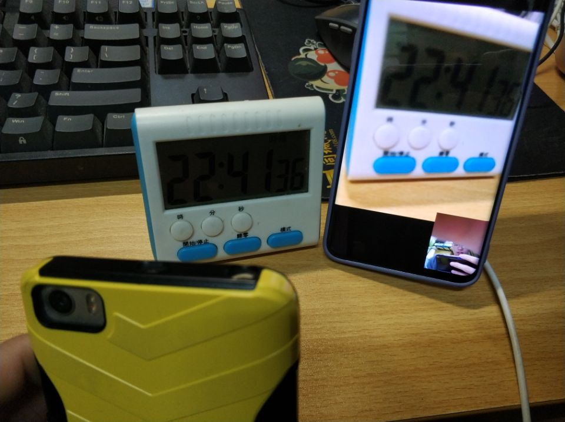图 延迟测试
H264 vs H265 我们在保持通话双方摄像头固定、画面保持不变的情况下分别测试了H264和H65视频通话，从以下结果可以看到，H265的编码效率略高于H264。
由于视频通话时，上传下载带宽是不断变化的，截图只能反映大致信息不能完全代表两者差异 事实上感觉H265只比H264好了一点点，差距不是太大，这可能和视频分辨率较小也有关。 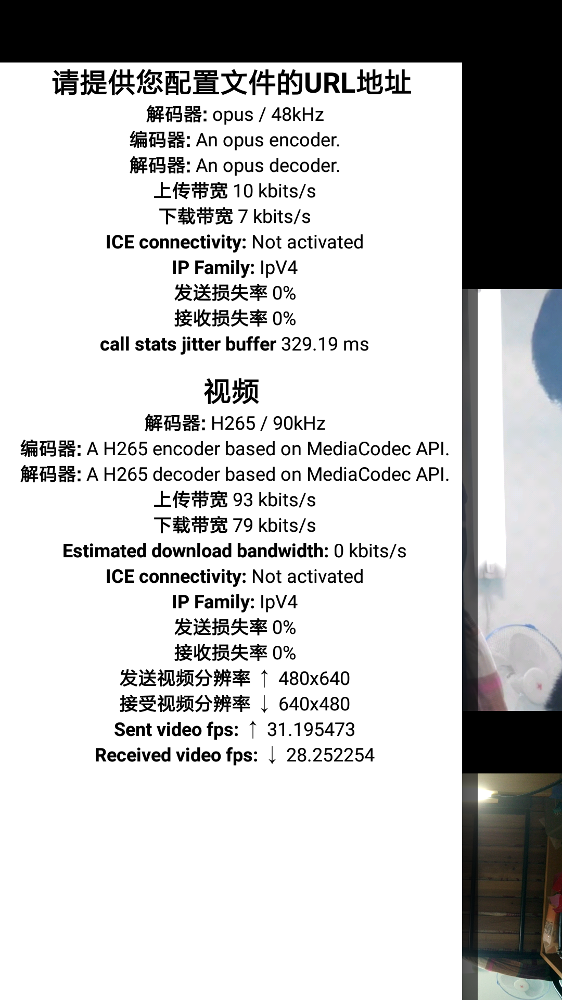 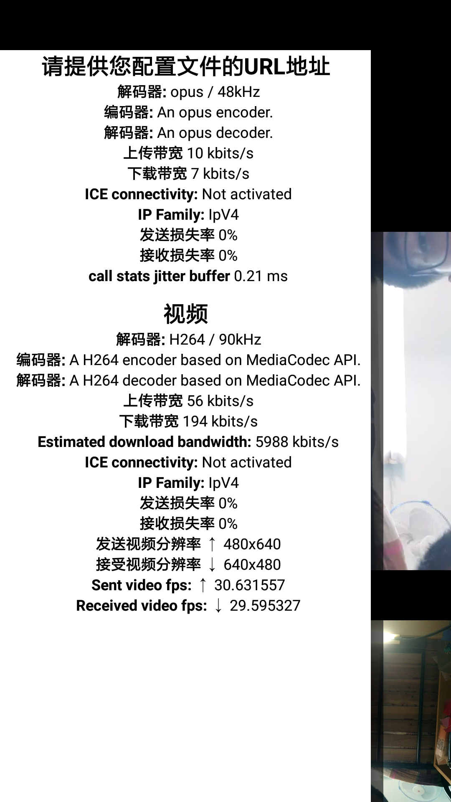
分析总结 本次实验总体来说难度不大，主要困难在于FreeSWITCH编译时碰到的问题，由于FreeSWITCH的使用仅限于视频通话的设置和视频会议的设置，在ppt较为完善的内容知指导以及学长的热心答疑下，后续部分难度不大。
问题解决 不能修改视频会议布局 原因是重新编译安装了FreeSWITCH后，忘记修改conference.conf.xml文件了，相当于没有加载布局模块
视频会议选择H265没有视频 原因是FreeSWITCH默认没有支持。
号码说明 1 2 3 4 5 6 7 8 9 10 11 12 13 14 9999 | 保持音乐 9996 | echo，回音测试 9992 | info，在控制台上显示呼叫参数 9888 | FreeSWITCH电话会议，每周召开 5900 | 呼叫挂起 5901 | 接听挂起的呼叫 5000 | 示例IVR 4000 | 听取语音信箱 33xx | 电话会议，48K(其中xx可为00-99，下同) 32xx | 电话会议，32K 31xx | 电话会议，16K 30xx | 电话会议，8K 2000-2002 | 呼叫组 1000-1019 | 默认分机号
参考